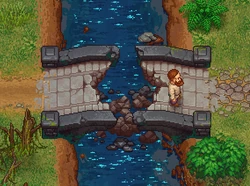
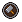
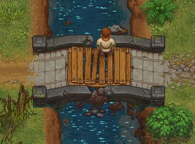

Stone bridge
| Stone bridge | |
|---|---|
 | |
Basic information
| |
Related pages :
|
River |
Location(s)
| |
| Swamp, Graveyard | |

The stone bridge is directly west of the graveyard and is required to access the swamp.
Cost
| Icon | Materials Required | Energy | Notes |
|---|---|---|---|

|
1× Wooden plank 4× Flitch 8× Nails |
-  |

Screenshots
Repaired bridge: 

| ||||||||